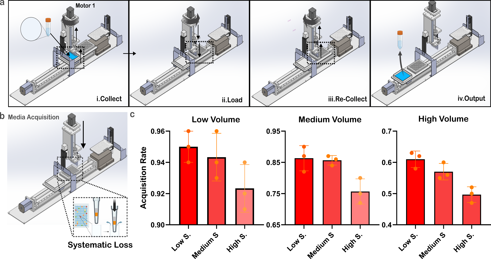
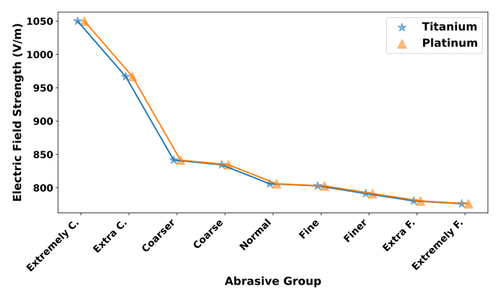
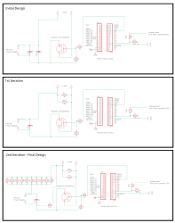
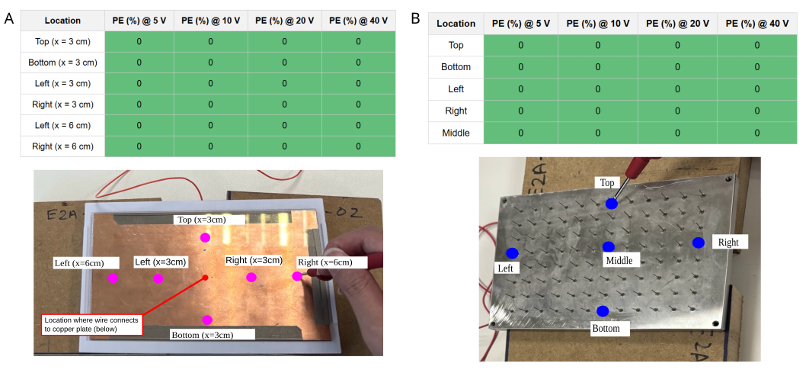
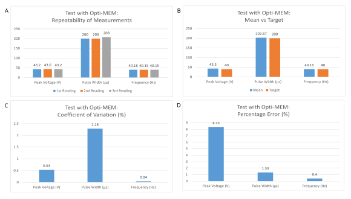
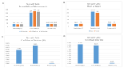

A Landmark Step Towards Off-the-Shelf, Non-viral Immunotherapy: Large-Scale Immune Cell Manufacturing in an Automated Universal Bioreactor
Supervisor: Prof. Tay Kah Ping, Andy
Abstract
Engineered immune-cell therapies remain constrained by high-cost, labour-intensive, and centralized manufacturing pipelines, with non-viral transfection representing a major bottleneck. To address this, we developed a fully automated, non-viral transfection platform designed as a universal backbone for scalable, off-the-shelf immune-cell manufacturing. Our system integrates conveyor-based plate transport, syringe-driven media handling, and a redesigned electroporation module incorporating a nanostraw substrate and a machine-aligned titanium electrode array. Across thirty automated cycles, the device demonstrated robust mechanical stability, reproducible timing (556 ± 12 s per run), and mesh-independent electric-field uniformity between titanium and platinum electrodes (MSE < 0.1 V/m). Electrochemical analysis confirmed the safety of titanium operation in RPMI, and dimensional validation verified consistent alignment across modules. Together, these results establish a wet-lab-ready automated transfection backbone capable of supporting high-throughput, low-perturbation engineering of immune cells, laying the foundation for decentralized, scalable, and clinically compatible non-viral manufacturing of next-generation allogeneic therapies.
Acknowledgements
We thank Prof Mark Chong for constructive feedback, and Yee Yang En for invaluable mentorship. We acknowledge the full originality of the work.
1. Introduction
Research Context. Engineered immune-cell therapies have transformed oncology by demonstrating that synthetic genetic reprogramming can endow effector cells with potent, tumor-specific cytotoxicity [1]. Among these, chimeric antigen receptor (CAR) T-cell therapy stands as the most successful example—six products have gained regulatory approval to date for the treatment of aggressive malignancies [2], such as relapsed or refractory B-cell lymphoma [3,4] and multiple myeloma [5,6]. This approach harnesses a patient’s own immune system to selectively recognize and eliminate tumor cells, overcoming limitations of traditional cancer treatments [7] such as surgery [8], radiotherapy [9], and chemotherapy[10], which often lack selectivity and efficacy against advanced or disseminated disease. Reflecting its impact, the global cell therapy market—estimated at US$25 billion in 2025—is projected to exceed US$117 billion by 2034 [11], driven by expansion into solid tumors [11], autoimmune disorders [12], and infectious diseases [13].
Despite these clinical successes, the field remains constrained by a fundamental manufacturing bottleneck. As of June 2023, more than 1300 clinical trials of CAR-T and related therapies were registered, approximately 93% of which employ autologous manufacturing pipelines [14]. Such patient-specific production is logistically fragile and economically prohibitive (US$0.4–1 million per treatment), limiting access to roughly 20% of prescribed patients [14,15]. Moreover, in real-world settings, manufacturing delays are so severe that ∼ 7% of patients die before receiving their infusion [15].
The core challenge lies in the transfection of primary immune cells—a critical step for introducing chimeric receptors or enabling precise genome edits. Current delivery modalities impose intrinsic trade-offs: (1) Viral vectors suffer from limited cargo capacity (∼ 5–15 kb), risks of random genomic integration, immunogenicity, and costly cGMP-scale production [14,15]. (2) Bulk electroporation requires extremely high electric fields (tens to hundreds of kVcm−1), causing Joule heating, calcium dysregulation, and transcriptional perturbations that compromise cell viability and function [14]. Furthermore, current treatment relies on centralized production models due to labor-intensive manual production and the need to maintain consistent quality and minimize product variability [16]. Additionally, QA/QC protocols are implemented due to concerns from the viral nature of the treatment [17]. This contributes to long wait times and necessitates cryopreservation, which can render some patients ineligible due to rapid deterioration in health and reduction in CAR-T cell viability before infusion [16]. Current solutions to address these challenges include automated devices such as CliniMac’s Prodigy1 and Thermofisher CTS xenon system 2, but they are designed to produce one batch of dose per cycle.
With the U.S. FDA projecting 10–20 new cell and gene therapy approvals annually by 20253 and the allogeneic immune-cell therapy market expected to grow at a CAGR of ∼ 27.4%4, there is an urgent need for scalable, non-viral, multipayload transfection technologies that preserve cellular integrity and integrate seamlessly into closed-loop automation.
Problem Statement. This demand motivates a new manufacturing paradigm: a universal, automated bioreactor platform capable of producing off-the-shelf immune effector cells at scale—decoupled from viral intermediates, engineered for high throughput and low-perturbation delivery, and designed to accelerate the industrial translation of next-generation cell therapies.
Project Objective. In this project, we aim to streamline and automate the transfection workflow for producing allogeneic immune cells. Current manufacturing pipelines for CAR-T therapy remain expensive, labour-intensive, and centralized, creating high costs, quality variability, and long production cycles. By developing an integrated automated system, we seek to reduce production costs, ensure consistent product quality, and shorten vein-to-vein time—ultimately enabling decentralized and more accessible manufacturing of immune-cell therapies.
Building on our MVP work which has demonstrated effective cell isolation (results not published) and single-well transfection[18], preliminary testing in the 96-well configuration revealed several challenges.
| Concern | Description |
|---|---|
| (1a) Uneven cargo distribution | Mid-section channels fill first in the one-input-to-eight-channel design, causing concentration imbalance. |
| (1b) Electric field variation | Inconsistent voltage and pulse parameters across wells. |
| (1c) Uneven cell loading | Cells are not evenly distributed across wells. |
| (2a) Cell residue | Residual cells remain in the well plate and reservoir. |
| (2b) Viability during transport | Cell viability decreases during movement between modules. |
Within the team, Tianmu will lead the development of the automation backbone, focusing primarily on the design and optimization of the media-transportation system. Celeste will concentrate on engineering the transfection module. Both subsystems will be jointly integrated into a cohesive automated platform.
Project Scope. Because the central objective is automation, our validation strategy prioritizes engineering performance over deep biological characterisation. Our key milestones are: (1) improving recovery efficiency by minimizing residual volume and achieving a recovery rate above 50%; (2) ensuring robust, stable and controllable system operation with a total processing time under 10 minutes; and (3) minimizing system-induced cell loss, maintaining viability above 70% when operating without electroporation. Initial testing will use Jurkat cells, an immortalised T-cel line with a rapid doubling time (1-2 days), allowing frequent iterative prototyping. Performance across recovery, stability, and viability will determine readiness for downstream optimization toward bedside or on-bench automated immune-cell manufacturing.
As a further step, once engineering benchmarks are met, we plan to incorporate in vitro experiments to refine system parameters for human T-cell transfection using fluorescent dyes or non-functional protien-cargo, producing a prototype positioned for biologically intensive refinement.
Novelty and Contribution. Our work presents three key advances over existing approaches: (1) We automate a non-viral transfection pipeline built on nanostructured interfaces that can be manufactured at comparatively low cost. The goal is to deliver a next-generation, scalable, and automated non-viral transfection platform that can serve both clinical (bed-side) and research (on-bench) applications. No equivalent system currently exists on the market; our prototype therefore lays the foundational groundwork for a future universal immune-cell manufacturing device. (2) We expand our earlier single-well prototype into a 96-well system, increasing production throughput by up to 96-fold. The redesigned platform incorporates standard laboratory consumables—including 96-well plates, pipette tips, and common medical springs—to ensure compatibility with existing laboratory workflows and enhance clinical utility. (3) We introduce an innovative shift from media-based to container-based transportation. This approach mitigates cell loss and residual accumulation, two common issues in current bioreactor designs. By ensuring that cells are transferred in a highly preserved state, this method improves cell viability and significantly compresses the overall manufacturing timeline.

2. Cell delivery system
Methodology
| Category | Requirement / Feature |
|---|---|
| Automation | Setup can enable stable, controllable, programmable transportation at a desired speed. |
| Manufacturing |
|
| Performance | Sample transporter is able to acquire cells and transport samples between reservoir and 96-well plate. |
| Indirect Contact Cleanliness | All surfaces indirectly contacting sterile workspace must be compatible with hospital-grade disinfectants (e.g., 70% ethanol, hydrogen peroxide). |
| Design (Footprint) | Setup designed for benchtop operation with footprint < 600 mm × 1200 mm to fit on a standard laboratory table. |
| Design (Weight) | Total weight of the instrument < 30 kg. |
| Safety |
|
The automatic backbone aims to address cell loss and long production times, targeting issues (1c), (2a) and (2b) (Table 1). It is expected to improve cell recovery, shorten the manufacturing cycle, and in turn enhance cell quality, increase output volume, and reduce the unit cost of CAR-T production. Table 3 summarizes the design exploration of the automation backbone.
Cell transportation between sample reservoir and 96-well plate To automate the transport of cells between the sample reservoir and the 96-well plate, we systematically compared two concept solutions: (i) direct fluid transfer using peristaltic pumps and (ii) container-based transport using a mechanical conveyor (transporter). The primary design considerations were to minimise cell loss, reduce shear stress, preserve sterility, and ensure reproducible positioning over the nanostraw electroporation region.
Peristaltic pumps, although widely used in bioprocessing, impose repeated compression--relaxation cycles and high shear stresses at the tubing--roller interface. These conditions can decrease viability during repeated transfers, while tubing surfaces introduce opportunities for adhesion, entrapment in dead volumes, and uncontrolled residual loss. Maintaining sterility requires frequent tubing replacement or cleaning, adding operational complexity.
To avoid these limitations, we adopted a conveyor-based transporter that moves cells in fixed well-plate carriers with minimal bulk fluid transfer. In this configuration, cells remain confined within standard microplate wells, and only short, well-defined fluid paths are involved during loading and unloading. This reduces surface area for adhesion, eliminates cyclic compression, and minimises shear exposure, thereby preserving cell integrity and yield. Because the wells serve as disposable, closed carriers, sterility is maintained through consumable exchange rather than extensive cleaning-in-place procedures. Consequently, the transporter concept provides gentler handling, lower residual loss, and improved reproducibility compared with peristaltic pumping.
Extraction and dispensing of cells
For extraction and dispensing of cells, we compared syringe-based displacement against pipette-tip based transfer. While both approaches can achieve accurate volumetric delivery, the dominant requirement was minimising residual cell volume while maintaining compatibility with the conveyor-based transport scheme.
Pipette tips are low-cost and common in laboratory workflows, but their long, tapered channels and air--liquid interfaces can trap small volumes of cell suspension near the tip orifice. This trapped residual varies with aspiration speed, immersion depth, and tip alignment, introducing uncertainty in the delivered dose. Frequent attachment and ejection of tips also increase mechanical complexity and risk misalignment within the constrained footprint of the automation backbone.
We therefore selected syringe-driven displacement as the primary extraction mechanism. The short and well-defined internal wetted volume enables near-complete evacuation with minimal dead volume. Piston-driven motion provides smooth, continuous flow profiles that reduce bubble formation and shear stress. Syringes can be rigidly integrated into the transport module, simplifying alignment with reservoir and plate wells while maintaining a closed, sterilisable flow path. Compared with pipette tips, syringe transfer offers lower residual loss, improved flow controllability, and superior mechanical integration.
Spatial layout of automation modules
The automation backbone integrates sample loading, plate transport, and electroporation within a compact benchtop footprint. We evaluated an L-shaped layout against a linear (``horizontal line'') configuration.
An L-shaped layout requires the plate to undergo a 90° directional change, necessitating either a rotational stage or complex guiding features. These additions increase mechanical complexity, introduce vibration sources, and complicate cable routing. Directional changes may also induce sloshing, perturbing cell distribution immediately before electroporation.
The horizontal-line configuration, by contrast, aligns the loading region, electroporation zone, and unloading area along a single translational axis. This simplifies mechanical design, minimises acceleration events, and reduces inertial disturbances to the fluid. The linear layout also simplifies enclosure design and allows future expansion (e.g., washing or incubation modules) along the same axis. For these reasons, the horizontal-line configuration was selected.
Actuation strategy for plate transport
To execute conveyor motion with sufficient smoothness and positional accuracy, we evaluated belt-driven linear actuators against lead-screw linear actuators. The key requirements included: (i) smooth, jerk-minimised motion, (ii) stable pausing without unwanted drift, and (iii) repeatable positioning over the nanostraw array.
Belt-driven actuators offer high speed but introduce motion ripple and micro-vibrations due to belt elasticity and periodic tooth engagement. These effects are most problematic at low speeds and during start--stop transitions, when fluid agitation is most likely. Belt stretch and wear also compromise long-term positional stability.
Lead-screw actuators, in contrast, rely on continuous rolling contact between the threaded screw and nut, producing deterministic, vibration-free translation. Their mechanical advantage allows fine-grained control of velocity and acceleration. The self-locking nature of many lead-screw systems prevents unintended motion during pauses, crucial for stable electroporation. Accordingly, we selected a lead-screw linear actuator to ensure smooth transport, stable positioning, and high repeatability.
| Area of focus | Consideration | Options | Options |
|---|---|---|---|
| Transportation of cells from sample reservoir to 96-well plate and vice versa | Ensure cell loss is minimal during transportation | Transporter | Peristaltic pumps |
| Extraction of cells from sample reservoir to well plates | Ensure minimal residue of cells in system during extraction/dispensing | Syringes | Pipette tips |
| Layout of components (sample loading, well-plate filling, electroporation region) | Ensure footprint stays within specification; ensure efficient operation to minimise total time | L-shape | Horizontal line |
| Actuator type for transport of cells | Ensure that movement of load is smooth; ensure that movement can be paused stably without introducing unwanted fluid disturbances | Belt-driven actuator | Ball screw linear actuator |


Results
Here we present the automated backbone (Fig. 2) and demonstarte the readiness of the device for automated transfection. In general, we evaluated the device in three folds. First, we demonstrate the steadiness of electroporation voltage generation through a benchmark characterization of voltage conditions. Next, we demonstrated the minimum sample volume loss in a typical cell transportation protocol. Finally, we characterized the device's capability to recover cells and optimized hyperparameters to achieve the best recovery performance. Together, the evaluation validated the readiness of the bioreactor for transfection experiments.
Voltage generator outputs stable rectangular waves at medium and low frequencies. Steady voltage toggling is essential for achieving consistent transfection while preserving cell viability. To ensure waveform stability, we adopted a two-module architecture comprising a DC voltage generator (bottom) and a voltage regulator (top), where the DC input is modulated into a rectangular waveform (Fig. 4a). This modular design enables straightforward troubleshooting, independent optimization of waveform parameters, and flexible integration with alternative power sources or control schemes. To characterize electroporation-relevant output, we benchmarked the waveform across three frequencies: high (53 Hz), medium (50 Hz), and low (10 Hz). We found that frequency, rather than peak ratio, predominantly governs output stability. At higher frequencies, low-level fluctuations emerge (Fig. 4b–c) and progressively amplify with increasing frequency. Empirically, the upper limit for stable rectangular wave generation was ~50 Hz. We attribute this instability to the limited dynamic response of the regulator, which prevents complete switching within each cycle at elevated frequencies, resulting in waveform distortion. Collectively, these results establish that the current generator reliably supports the typical electroporation regime (~40 Hz). In the transfection section, we further refine the system to reduce device footprint and enhance programmability, thereby improving compatibility with automated and scalable transfection workflows.

Automated bioreactor enables efficient medium acquisition. Conventional bioreactors rely on tubing-based systems, which often incur cell loss due to residual medium within the flow path. To address this limitation, we developed a pipette-based acquisition module comprising a multi-channel pipette integrated with a movable platform supporting both the sample reservoir and transfection substrate. This design departs from conventional peristaltic pump systems by transporting the sample platform rather than the medium, thereby minimizing residual loss. To quantify acquisition performance, we evaluated volume recovery under a representative transfer protocol (Fig. 5a), with results summarized in Fig. 5c. At low input volumes and low acquisition speeds, near-complete recovery was achieved. In contrast, higher volumes or faster acquisition led to a marked reduction in recovery, primarily due to spillage. This systematic loss (Fig. 5b) arises from the non-negligible volume occupied by the pipette tip relative to the limited well capacity of the transfection substrate. The effect is less pronounced at low volumes, where the tip occupies a smaller fraction of the well. These observations suggest a design refinement in which medium transfer is performed in multiple stages to reduce effective tip displacement—for example, sequential dispensing in fractional volumes. Together, these results demonstrate effective medium acquisition under optimized conditions. We next assess whether cellular components within the medium can be recovered with comparable efficiency.

Automated bioreactor enables high-efficiency cell recovery with minimal loss. Conventional bioreactor systems are often limited by substantial cell loss during medium handling. Here, we quantitatively evaluate the recovery performance of the proposed device using a simplified protocol that excludes transfection (Fig. 6a). All operational parameters were set to the optimized conditions identified from prior volume acquisition experiments, namely intermediate medium volume and acquisition speed. Jurkat cells, a rapidly proliferating T cell line, were suspended in RPMI 1640 to approximate realistic manufacturing conditions. As summarized in Fig. 6b, the device achieves high and consistent volume recovery. Notably, recovery efficiency is approximately 5% higher than that observed in water-based controls. This discrepancy is attributed to differences in fluid properties. Specifically, the lower viscosity and surface tension of water promote dispersion upon pipette interaction, reducing the likelihood of re-collection. In contrast, RPMI 1640, enriched with proteins and nutrients, exhibits higher viscosity and surface tension, facilitating cohesive fluid behavior and improved recovery during aspiration. Cell recovery exhibits a statistically significant dependence on cell concentration, with optimal performance observed at intermediate concentrations (p < 0.05). We attribute this to two competing effects. At higher concentrations, increased cell–surface interactions promote adhesion to device interfaces, reducing recovery. At lower concentrations, variability in hemocytometer-based quantification increases, and particulate contaminants are more likely to be misclassified as non-viable cells due to reduced cell density in the field of view (Fig 6c). This interpretation is consistent with viability measurements, which show significantly reduced viability at low concentrations compared to medium and high conditions. An alternative explanation is that Jurkat cells, as suspension cells, exhibit enhanced viability when in proximity or loose clusters, a condition more readily achieved at higher concentrations. However, this hypothesis requires further validation beyond the scope of the present study. Taken together, these results identify an optimal operating regime at approximately 1 million cells mL−1, balancing recovery efficiency and measurement stability. Across all tested conditions, recovery exceeds 60%, with optimal performance approaching 80%. These findings demonstrate that the proposed system enables efficient cell recovery with minimal loss, establishing a robust foundation for subsequent transfection experiments.

Electroporation system
Methodology
| Category | Key Requirements |
|---|---|
| Electroporation Plate (96-well plate, cargo channel, ITO setup) |
|
| Electrodes |
|
| Power for Electroporation Process |
|
The electroporation set up aims to address viral-vector CAR-T challenges and scalability limits, targeting (1a) and (1b) (Table 1). It supports the translation of the protocol for both clinical and research, enabling scalable cell production, and robust cargo delivery and nano-electroporation.
Table 5 summarizes the design idea of the electroporation plate. The design of the electroporation plate was guided by the above requirements, along with sterility, and compatibility with the automated workflow. Design alternatives for each functional component were evaluated systematically, and the chosen solutions are justified below
| Area of focus | Considerations | Options | Options |
|---|---|---|---|
| Design of cargo channel |
|
One input to Two channel | One input to One channel |
| Material of Cargo channel |
|
M2R-CL | Acrylic |
| Delivery of current to ITO plate |
|
From side of ITO plate (similar to current set-up) | From bottom of ITO plate |
| Consumable Attachment |
|
Latch | Interlock structures |
| Controlling Pulses for Electroporation |
|
Pulse generator from supplier | Create circuit setup with a microcontroller |
| Power supply for Electroporation |
|
Battery Stack | Bench Power supply unit |
| Material of cathode |
|
Platinum | Titanium |
Material of Anode
Titanium was selected as a substitute for platinum as the anode material primarily to reduce cost, while still fulfilling the necessary requirements for biocompatibility, corrosion resistance, and electrochemical stability. Although platinum offers excellent electrochemical stability, titanium provides comparable performance at significantly lower cost. Its naturally forming TiO2 passivation layer ensures stable performance under repeated electrical pulsing at 40-50V in buffered media, with demonstrated low cytotoxicity in Jurkat or primary human T cells [19,20].

The suitability of titanium electrodes for electroporation was validated throuhgh theoretical and empirical validation analysis. In silico simulations showed that the average electric field at the transfection membrane was unchanged across all meshes (p < 0.99; Mean Square Difference < 0.1 V/m; Fig.3 ). Theoretical analysis (Appendix) further confirmed that pulsed operation under expected voltage results in negligible Ti4+ release, supporting titanium's suitability as a biocompatible anode.
Design of cargo distribution channels
Two designs were assessed: a one-input-to-one-channel configuration and a one-input-to-two-channel configuration. Although the latter reduces the number of filling steps, the presence of bifurcation junctions increases the risk of stagnation, coagulation, and uneven hydraulic resistance. These issues directly compromise volume and concentration uniformity across channels. The one-input-to-one-channel design was therefore selected, as it ensures consistent, obstruction-free filling and stable concentration delivery to each well.
Material of cargo channel
During material selection, M2R-CL, a medical grade resin, was initially chosen over acrylic due to its smooth surface and mechanical robustness, which reduce protein adsorption and improve reproducibility in electroporation. Acrylic assemblies with multiple bonded layers introduced seams that could trap proteins and cause alignment variability. However, prototyping revealed that the printed channel walls in M2R-CL were structurally weak, resulting in flimsy walls that were unsuitable for forming cargo channles with clean alignment to the well plate rows. As a result, an acrylic version was fabricated, which provided the desired straight and rigid walls.
Delivery of current to the ITO plate
Current delivery from the side of the ITO substrate was considered but rejected due to the risk of damaging the fragile conductive coating and tendency for edge-concentrated current paths, which reduce field uniformity. A bottom-contact configuration was therefore chosen, to protect the ITO layer from mechanical damage, while promoting uniform current distribution, and simplifying assembly process.
To achive this, a copper plate was placed below the ITO plate to distribute current to it. Copper was chosen over materials such as aluminium and stainless steel due to its higher electrical conductivity, minimizing voltage drop and ensuring efficient current delivery.
As the ITO glass plate is only conductive on its surface, isotropic conductive tape was used to establish contact between the copper plate and surface of ITO plate. A separate acrylic adhesive tape between the ITO plate and cargo channel prevents contact between FITC-dextran solution and the conductive tape, ensuring a non-toxic electroporation environment.
Consumable attachment mechanism
Latch-based mechanisms were compared with passive interlock structures. Latches introduce moving components that increase assembly complexity, tolerance stack-up, and risk of mis-seating—critical concerns when aligning consumables above nanoscale electroporation structures. Interlock geometries integrated directly into the cargo-channel moulding provide stable, repeatable, and alignment-preserving attachment without requiring user adjustments. This approach supports consistent operation and facilitates automation.
Controlling pulses for electroporation
An initial pulse generator, sourced from the device manufacturer, was selected for implementation. This aimed to connect directly to the CNC controller of the main device, where it generates the pulses upon receiving a voltage signal. However, experimental testing demonstrated that the output did not meet the required 200 µs, and the frequency programmed via the CNC controller could not be achieved. Further investigation identified hardware limitations as the primary cause, as the CNC controller's spindle rate restricts signal output to a minimum of approximately 20 Hz. Moreover, the controller does not support code looping, preventing generation of a continuous 2-minute voltage signal without risk of compromising device performance. These constraints necessitated the integration of an additional component to enable repetitive signal generation.
| Area of Focus | Option 1 | Option 2 | Option 3 |
|---|---|---|---|
| Microcontroller | Arduino Uno | Arduino Nano | ESP32 |
| Pulse Switching | MOSFET | IGBT | Solid-state relay |
To simplify the system architecture and reduce potential signal loss, the pulse generator was replaced with a microcontroller-based circuit. The Arduino Nano was selected due to its compact form factor, enabling implementation on a smaller circuit board compared to the Arduino Uno. It was also preferred over the ESP32, as it meets the functional requirements for pulse generation without introducing unnecessary complexity associated with wireless communication or real-time subsystems. This selection ensures more stable and predictable timing behaviour, which is critical for maintaining precise pulse width and frequency (refer to Table 6).
For control of the DC power source, a MOSFET was employed due to its fast-switching characteristics and voltage-driven operation. Although IGBTs can switch DC, they require higher gate drive currents and exhibit slower switching speeds, which may compromise timing accuracy and pulse edge definition. Solid-state relays exhibit even slower switching performance, making them less suitable for applications requiring precise pulse control.
The circuit design underwent multiple iterations, ultimately achieving a stable output of 200 µs pulse width at 40 Hz with a square waveform across varying voltages and resistive loads.

| Component | Decision | Rationale |
|---|---|---|
| Nano-straw membrane | Single use |
|
| Well plate | Single use |
|
| Cargo channel | Single use |
|
| ITO plate | Single use |
|
| Anode | Reusable, integrated into device |
|
Component Re-usability
Table 7 summarizes the component resuability considerations. The transfection plate comprises multiple layers that directly contact patient-derived samples or form critical microfluidic and electrical interfaces. Components that are permanently bonded or contain micro-scale crevices—specifically the nano-straw membrane, well plate, cargo channel, and ITO substrate—are unsuitable for reuse due to difficulties in sterilisation, risk of contamination, and mechanical damage during disassembly. These parts are therefore designated as single-use consumables to ensure sterility and consistent electroporation performance.
The anode (titanium electrode), however, is a monolithic metallic component integrated into the device frame. Its smooth surface, corrosion resistance, and absence of internal crevices enable reliable cleaning and disinfection without compromising structural or electrical integrity. As such, the anode is reusable, balancing material cost with safe and reproducible operation.
Results
Final Prototype for Electroporation System

The final prototype of the electroporation system Fig. 5. generates the required voltage and pulse for 2 minutes upon receiving a signal from the CNC controller. Aside from the prototyping plan mentioned in the methodology section, the final prototype also incorporates a 3D-printed PETG holder for the copper plate, a 5mm acrylic part holding the titanium array, and 2mm acrylic parts to provide protective housing for the circuit.
The electrode array was fabricated as a machine-grade, vertically aligned titanium array using conventional machining. Electrodes were secured using cylindrical screw holders and sealed at the rear by cap soldering.
Caution was taken to ensure that conductive tape covers the top surface of the ITO plate by ~2mm along the rims, to ensure no contact is made between the tape and cargo fluid. 3M's 8153LE double sided tape was used to bond the ITO plate to the cargo channel and assemble the system (i.e. acrylic parts forming the cargo channel and nanostraws to well plate), as it provides strong adhesion and chemical resistance, while ensuring a secure seal to prevent fluid leakage. In addition, it was manufactured using a solventless process, and has been used in cell work without observed cytotoxicity, thus making it suitable for this application [22] [23].
System Validation
A series of tests were conducted to evaluate the performance and reliability of the bioreactor electroporation system. These tests focused on ensuring electrical integrity, fluid containment, signal fidelity, and overall system functionality prior to biological experimentation.
Evaluating Electrical Integrity within the System: Validation tests were conducted on both the titanium electrode array and the ITO-metal plate assembly. Each component was connected to a DC power supply, and voltage measurements were taken at specified points using a multimeter (refer to appendix - test with resistors).

Measurements were recorded for input voltages of 5 V, 10 V, 20 V, and 40 V to evaluate performance across a representative operating range . The results indicated that the measured output voltage matched the input voltage at all points, demonstrating negligible voltage drop. This confirms that both components can deliver a uniform voltage signal without observable degradation (refer to Fig. 6).
Evaluating Fluid Containment: To evaluate fluid containment the ITO plate was secured to the base of the cargo channel. Alternate channels were filled with water, such that a stable menisci that extended above the channel openings was formed due to capillary effects. Visual observations of meniscus stability were made over a period of 90 minutes, by estimating the height of the meniscus at 30 minutes intervals and monitoring for any signs of fluid seepage or instability.
| 1st reading (time = 0 minutes) | 2nd reading (time = 30 minutes) | 3rd reading (time = 60 minutes) | 4th reading (time = 90 minutes) | |
|---|---|---|---|---|
| Estimated height of meniscus from surface of cargo channel walls (mm) | 1 | 1 | 1 | 1 |
No evidence of seepage between channels or at the ITO interface was observed throughout the testing period, indicating that the cargo channel assembly provides effective fluid containment under the tested conditions (refer to appendix-seepage test).
Evaluating Signal Fidelity: Two tests were conducted on the Arduino-based pulse generation circuit, with peak voltage, pulse width, frequency, and waveform shape recorded using an oscilloscope.
In the first test, resistive loads were used to simulate electrical conditions ranging from a single-well to a 96-well configuration (i.e., 1-wells, 6-wells, 12-wells, 24-wells, 48-wells and 96-wells). The resistance of a single well was estimated using \( R_{well}=\frac{d}{\sigma A} \), where \( d \) is the spacing between the electrodes, \( \sigma \) is the conductivity of OptiMEM, and \( A \) is the effective cross-sectional area. Equivalent resistance for scaled configurations was determined using parallel resistance relationships (refer to appendix - verification test with resistors).
Results showed predictable voltage scaling with input; however, a consistent voltage overshoot of approximately 16-27% was observed across tested voltages (5-40 V). Despite this, characteristics of the signal remained highly stable, with pulse width maintained near 200 µs (PE < 10%), frequency near 40 Hz (error < 1%, CV < 0.3%) and a square waveform across varying resistance and voltages.

In the second test, the circuit was integrated into the full electroporation setup and operated with Opti-MEM-filled channels and wells. Under these conditions, peak voltage more closely matched the target (43.33 V at 40 V input, ~8.3% error), indicating improved accuracy. Pulse width (≈202.67 µs, CV = 2.28%, PE = 1.33%) and frequency (≈40.16 Hz, CV = 0.04%, PE = 0.4%) remained highly stable, and waveform integrity was preserved.
Overall, while resistive testing revealed a systematic voltage overshoot, performance under fluid loading more accurately reflects actual operating conditions, demonstrating improved voltage accuracy together with stable pulse width, frequency, and waveform characteristics.
Evaluating system with cells: Upon completion of the above tests, a full electroporation run using Jurkat cells and FITC-Dextran as cargo for transfection was executed to observe impact on cells.

Electrical system stability: A full run using Jurkat cells and FITC-Dextran was executed to observe the device's impact on cell populations. Analysis shows the voltage output is stable with low variation (Peak Voltage: CV 3.37% , PE 9.33%; Pulse Width: CV 4.46%, PE 8.83%; Frequency: CV 0.08%, PE 0.32%).
However, the mean peak voltage achieved was below the 40V target. This is likely attributed to impedance fluctuations from air gaps, whereby reduced fluid height disrupting titanium electrode contact and presenece of bubbles in the FITC-Dextran solution increased the voltage drop.
| Mean (x̄) | SD | CV(%) | Variation Level | |
|---|---|---|---|---|
| Viability | 76.83 | 0.10 | 13.03 | Moderate |
| Live Cell Count | 1,514,418 | 1,077,992 | 71.18 | High |
| Recovery Ratio | 1.34 | 1.05 | 77.98 | High |
Cell viability and recovery ratio: Mean post-experimental viability was 76.83% (±10%) from a 99% baseline. A CV of 13.03% suggests the electrical impact on the cells is moderately consistent, while a mean recovery ratio of 1.34 suggests the protocol is generally non-lethal. However, recovery ratio has a high CV (<70%) that was attributed to mechanical leakage of cells between the well plate and nanostraws, caused by damage to the adhesive tape during the manual assembly process (refer to Table 9).
| Mean (x̄) | SD | CV(%) | Variation Level | |
|---|---|---|---|---|
| Transfection Efficiency (R5%) | 6.63 | 2.32 | 35.03 | High |
Flow Cytometry and Transfection Efficiency: Mean transfection efficiency was 6.63% (CV 35.03%) (refer to Table 10). This variability likely stems from the leakages, tacky nature of the adhesive and flimsy nature of the nanostraws-adhesive interface, which made the assembly highly susceptible to accidental contact.

Fluorescence Microscopy Observations: Imaging (Fig. 10) indicates that FITC-Dextran transfection occurred in a sub-population of cells, which maintained a healthy, rounded morphology like the negative control. This proves the voltage output can achieve molecular delivery without causing universal cell lysis.
Collective Observation: Overall, the results confirm the device is biocompatible and maintains cellular integrity. The transfection efficiency - validated by both flow cytometry and fluorescence microscopy - proves the device's capability to deliver molecules into the intracellular space. While the voltage output is stable, further optimization of electrical parameters and process-level modifications are required to achieve more reproducible and high-yield results.
Overall Evaluation
From the varying tests executed, the device has been proven to fulfil the requirements via the following:
| Category | Key Requirements | Evidence |
|---|---|---|
| Electroporation Plate (96-well plate, cargo channel, ITO setup) |
|
|
| Electrodes |
|
|
| Pulse Generation Circuit |
|
|
While the device has demonstrated promising results, there are some limitations and areas for future improvement. Results from the cell experiments may not fully reflect the true device performance due to the influence of the following factors.
| Limitation | Impact | Future Improvement |
|---|---|---|
| Tacky nature of adhesive tape caused it to tear during peeling (at narrow regions), resulting in seepage of cells between the well plate and nanostraws. | Uneven cell distribution and fluid height, leading to inconsistent electrode contact, reduced transfection efficiency, and cell loss. | To replace tape with low/non-tack adhesive. |
| High flexibility of Nanostraws made removal of adhesive backing difficult, increasing unintended contact during placement. | Unintended contact may compress the nanostraws, resulting in inconsistent transfection efficiency. | Develop a simple handling jig to hold Nanostraws taut during assembly. |
| Manual handling errors during operation | Increased cell death | Improve cell-handling procedures. |
| Single inlet design for each row on cargo channel promoted air entrapment during FITC-dextran filling due to capillary effects. | Uneven cargo distribution and variable transfection outcomes. | Redesign cargo channel to have additional inlets, allowing for more uniform filling and reduced air entrapment. |
| Insufficient rigidity of the acrylic support plate caused tilting of the titanium array. | Non-uniform electrode depth and electric field distribution, leading to inconsistent transfection. | Reinforce acrylic support plate (e.g. with structural ribs) |
4. Discussion - to be modified
INCLUDE OVERALL PIC OF DEVICE HERE
Summary and Analysis. Our work demonstrates that a fully automated, non-viral transfection platform for large-scale immune-cell engineering is both technically feasible and operationally robust. Through systematic prototyping and iterative testing, we established that the automation backbone—comprising conveyor-based well-plate transport, syringe-driven media handling, and a custom electroporation substrate—can already execute complete processing cycles with high stability and reproducibility. Across thirty consecutive automated runs, the system maintained consistent temporal performance with only a single failure, whose root cause was identified and resolved. This confirms that our mechanical design, motion-control strategy, and software--hardware integration are sufficiently mature to support downstream biological experimentation.
Parallel evaluation of the electroporation module further validated key theoretical and engineering assumptions underpinning the device. Computational analysis revealed that titanium and platinum electrodes generate indistinguishable electric-field distributions at the transfection interface, and mesh-refinement studies confirmed numerical convergence, indicating that our field predictions are physically reliable. Experimental calibration of the titanium array verified uniform electrode length, structural stability, and safe electrical behaviour in RPMI-based conditions, supporting its suitability as a reusable anode. Together, these findings confirm that the core mechanisms required for uniform field delivery—electrode alignment, current continuity, and substrate integrity—are already in place.
Limitations Meanwhile, we would like to point out the limitations of our work. First, the current prototype does not yet support automated control of the electrical pulse. In the present design, the electroporation voltage remains continuously applied, and the effective field strength experienced by cells is modulated indirectly by adjusting the distance between the titanium electrodes and the ITO substrate. While this quick fix enables preliminary testing, it provides limited temporal specificity and does not reflect the pulsed-field regimes required for optimal transfection efficiency. A more robust solution will involve integrating a GPIO-controlled, programmable power delivery module to enable precise timing, amplitude modulation, and waveform control during electroporation.
Second, a dimensional mismatch potentially remains between the electroporation substrate and the media transporter. At this stage, positional calibration relies on identifying appropriate coordinates in manual mode and subsequently updating the automated control script with manually tuned parameters. Although functional, this approach is not scalable and introduces susceptibility to small mechanical deviations. To minimize the risk of damaging the fragile titanium electrodes during alignment, we also employ low-cost steel prototypes during position tuning. Future iterations will require tighter dimensional standardization between subsystems or the incorporation of active sensing methods to ensure repeatable, self-correcting alignment.
A third potential limitation concerns the presence of residual media within the cargo channel or sampling interface. Variability in fluid acquisition and expulsion can arise from suboptimal springe motion profiles, leading to inconsistent recovery volumes or retention of trace liquid between cycles. This may be addressed by further refining movement speed, acceleration, and positioning parameters for each fluid-handling operation. Additionally, adopting disposable pipette tips as intermediate media carriers may enhance reliability and reduce cross-contamination risk while providing a more flexible and replaceable interface.
Overall, while these limitations do not compromise the functional readiness of the current prototype, addressing them will be critical for advancing the platform toward high-precision, reliable, and fully automated non-viral transfection suitable for routine experimental or translational use.
Future Work Looking ahead, we will strengthen both the engineering rigor and biological performance of our platform to support a robust, fully automated electroporation system. Our efforts will focus on two parallel streams: (a.)Biological validation: We will quantitatively assess cell recovery across the workflow, confirming preservation of media volume, cell number, and viability using standardized Trypan blue–based counting. Once the automated backbone is confirmed stable, electroporation performance will be evaluated using Jurkat cells with fluorescent dyes and proteins, and optionally extended to primary T cells to assess translational potential. Detailed protocols are provided in the Appendix Protocol>. (b.)Engineering characterization: We will verify uniform current distribution across titanium electrodes, ensure no fluid seepage within the consumables assembly (well plate, nanostraw membrane, cargo channel, ITO substrate), and characterize electric-field uniformity across wells during electroporation. Integration within the automated framework will be re-examined to confirm mechanical compatibility, electrical stability, fluidic reliability, and software–hardware synchronization before the next prototyping iteration.